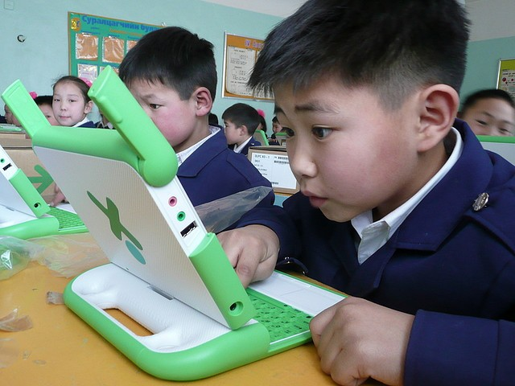
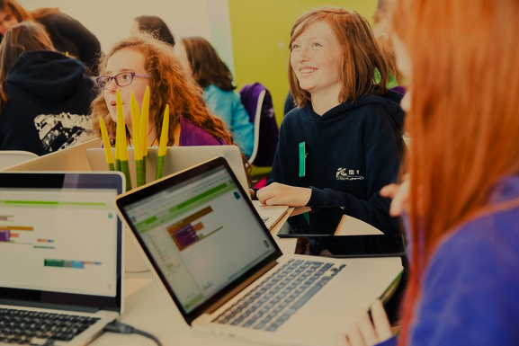

Our Mission
Our mission is to equip unemployed and out-of-school youth in under-resourced communities with practical, job-ready digital and coding skills that improve their confidence, employment opportunities and future careers.

Empowering Johannesburg's youth through practical digital skills.

CodeBridge is a fictional non-profit organisation founded in Johannesburg in 2022 by a small team of passionate software engineers. The organisation began as a weekend volunteer initiative, where coding mentors taught basic programming skills to young people at a local community centre in Alexandra.
As interest in the programme continued to grow, the founders officially registered CodeBridge as a non-profit organisation in 2023. Since then, the organisation has expanded its reach by offering practical coding bootcamps in HTML, CSS, JavaScript fundamentals and basic computer literacy.
Today, CodeBridge continues to empower young people by providing practical digital skills that improve employment opportunities while helping bridge the digital divide in under-resourced communities across Johannesburg.
Our mission is to equip unemployed and out-of-school youth in under-resourced communities with practical, job-ready digital and coding skills that improve their confidence, employment opportunities and future careers.
Our vision is to create a Johannesburg where every young person, regardless of their background or financial circumstances, has access to quality digital education and the opportunity to participate in the growing technology industry.
Founder & Programme Director
Mapuru founded CodeBridge with the vision of making technology education accessible to every young person. His passion for software development and community development drives the organisation's mission to prepare learners with practical digital skills for the future.

Our programmes focus on hands-on projects that help learners build practical coding experience instead of only learning theory.
Learners receive guidance from passionate volunteers who are committed to helping young people succeed in technology.
We equip learners with valuable digital skills that improve confidence, employability and future career opportunities within the technology industry.